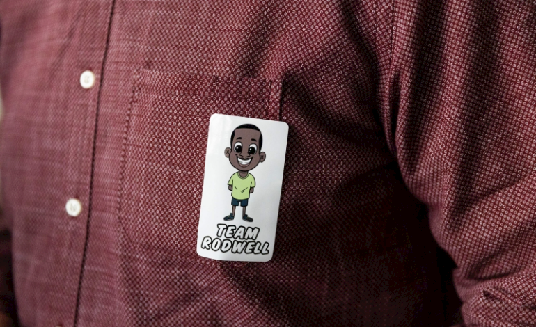

鬣狗咬到面容全毁 医生免费为9岁童整形

柯马扎纳头上套着一件带兜帽的绿色毛衣，脸上缠着白色绷带，抵达医院准备接受整型手术。当坐着轮椅的他被推入医院大楼时，众人为他鼓掌欢呼。（图：法新社）
（约翰内斯堡20日法新电）津巴布韦一名9岁男童上月遭鬣狗袭击，面部几乎完全被咬烂后，数名南非整形外科医生目前正准备为这名不幸的男孩做面部整形，让他重拾信心。
柯马扎纳在5月2日晚上在首都哈拉雷城外的教堂做礼拜时遭到袭击，失去了鼻子、左眼、上嘴唇的大部分、前额的部分和脸部的其他部分。
经医生抢救后，柯马扎纳总算保住性命，但由于资源匮乏，他们对修复其脸部束手无策。
由于负担不起只有国外才能提供的专科手术费，他的母亲联系了邻国南非的医生，后者同意在约翰内斯堡的一家私人诊所为他做免费手术。
整形外科医生里米娅本周早些时候告诉法新社：“当她提到这个可怜的孩子被鬣狗咬伤的故事时，我无法见死不救。”
柯马扎纳上周六（19日）飞抵约翰内斯堡，受到医护人员的热情迎接。许多人穿着印有他卡通形象的T恤为他打气加油。
手术料持续20个小时
当坐着轮椅的他被推入医院大楼时，众人为他鼓掌欢呼。他头上套着一件带兜帽的绿色毛衣，脸上缠着白色绷带。米娅和他的团队将在周一进行探索性手术，之后将安排一个复杂的手术，预计将持续20个小时左右。
他们将使用他身体其他部位的组织来重建他的下巴、鼻子、嘴巴和脸颊。他们还将为他置入一颗义眼。
米娅说:“不幸的是，他的脸上会有多处伤疤。我们尽可能减少在他脸上留下伤疤。”
但他警告说：“柯马扎纳永远不会有一张完全正常、没有疤痕的脸”。
“但我们想给他一些东西，至少能让他活下去，享受其他孩子做的事情。”
热心人捐款付住院费
柯马扎纳也收到来自热心人士的善款，用于支付住院费用。他预计将在病房待上至少一个月，期间必须经历几次修补程序。
在此期间，一家酒店主动向其母亲提供住宿。

医院人员列队欢迎柯马扎纳的到来。（图：法新社）

一些贴心的工作人员换上印有柯马扎纳卡通形象的T恤，为他加油打气。（图：法新社）